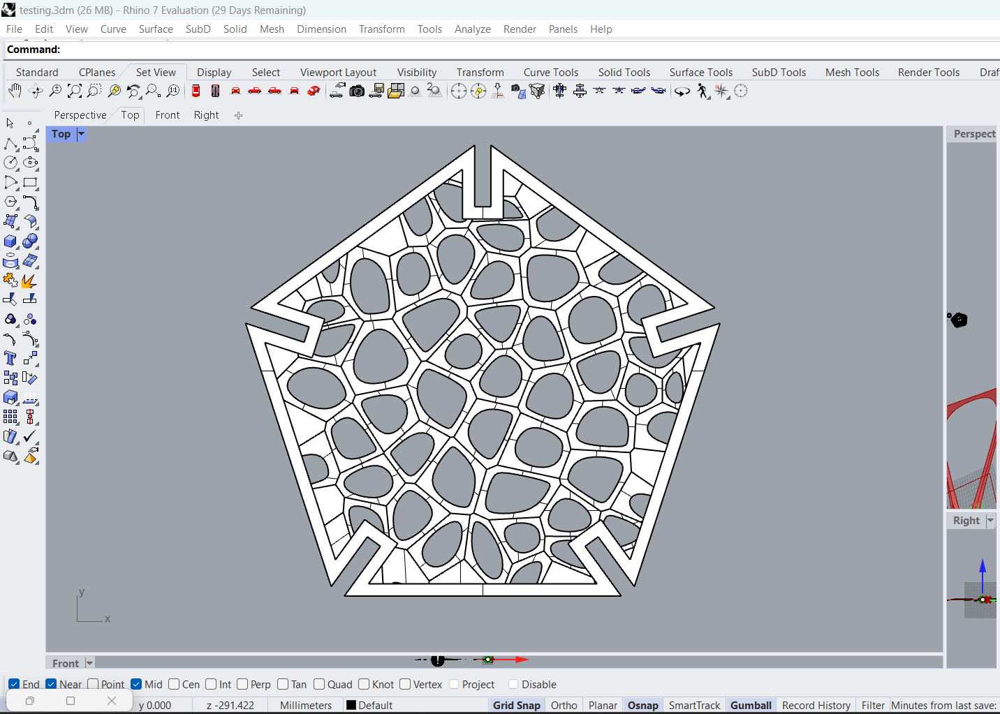
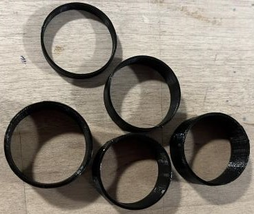
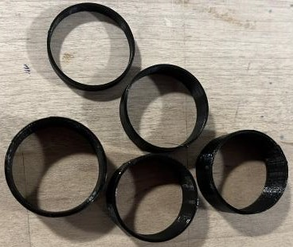

When I found out I'd need to buy a 3D printer for this class, I immediately began thinking of things I could and give out as presents. When we did the lamp assignment, I actually really liked my lamp and thought it can out really well. After that project was finished, I was thinking about ways I could travel with a bunch of lamps to give to family members over winter break. I knew the lamp I'd made before would fit very well in a suitcase. So after much pondering I thought what if I assembled the lamps when I get to travel destination? But then I realized that my family members would have the exact same problem about lamps fitting in suitcases, and I also did not want to spend my entire vacation hot glueing. So then I thought what if my family members assembled the lamps themselves when they got home? But I didn't think any of them would actually take the time to hot glue the pieces togethers, so that wouldn't work either. More determined than ever not to spend money on gifts for my family, I pondered longer. Then, it hit me: what if the lamp could click together like legos? Then it could be a lamp and a fun project! So that's what inspired me to do this.
Side Note: It was recently pointed out to me that I will need to spend money on these gifts because I need to supply the actual lamp part of the lamp and not just the shade. While this is dissapointing, it did not dampen my excitement around doing this.
Initially I thought I'd mak pentagons that fit together like in Assignment 4, but Professor Nadya pointed out that might be difficult to assemble. So Sherry Wang sent me her work from assignment 2, showing how she used what I will be calling "pins" (for lack of a better word) to how cardboard pieces together. I really liked that ideas, but I didn't really like how the cardboard stuck out from the shape. So I decided I would make a pin you can put right on the tips of the vertices of to hold it together. I thought that might be less obvious.
I started with the most important part: the pentagon. In assignment 2, the slits had been on the sides of the shape. I needed to move the slits to the viertices of the shape. After a LOT of math (special thanks to Harish Chandra Rajpoot on math.stackexchange.com for answering a random question seven years ago) I got the slits on the vertices and I was very proud of myself.

After creating the shape, I needed to fill it with something. I found a youtube video online that showed how to make a voronoid pattern (thank you June Lee of youtube) and I really liked it. I tried to make the voronoid in the same shape as the pentagon, but I was having trouble with that so instead I opted to just make a square of voronoids and trim out the pentagon.
I offest the pentagon to make a border I could boolean union with the voronoi that I trimmed. I then extruded the surface half a millimeter.
 
